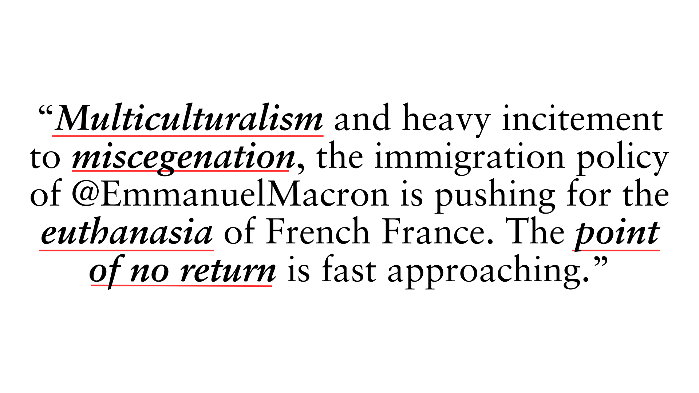
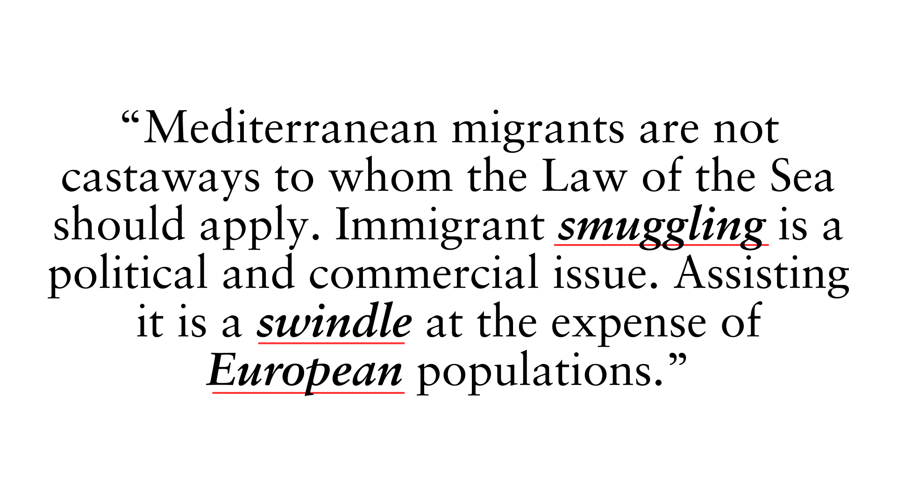
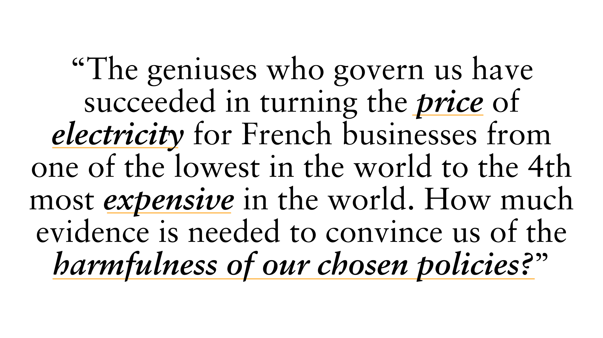
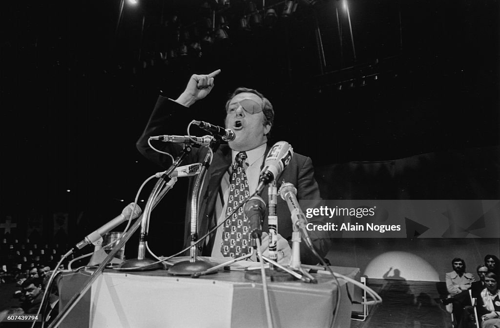
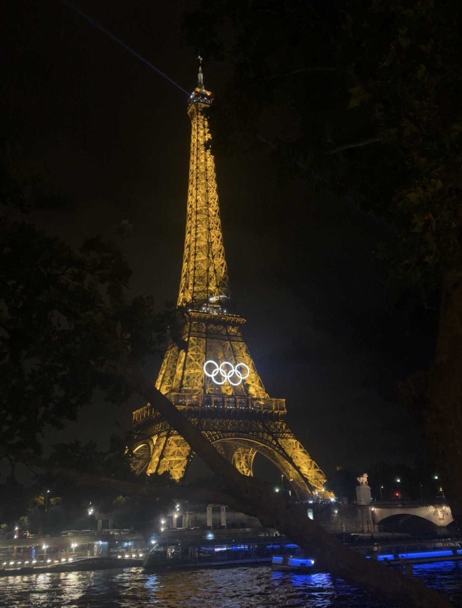

By Ariel Sheinberg
In France, the far-right National Rally (RN) has surged in popularity this year, following a populist rebrand that distances itself from its overtly prejudiced past.
This shift was evident during the European Union (EU) Parliamentary elections this spring, where RN secured an unprecedented 31% of the vote, overshadowing the Renaissance party, led by Prime Minister Emmanuel Macron. Marine Le Pen, RN’s leader, has capitalized on growing dissatisfaction with Macron’s government by framing France as a nation in crisis. Her rhetoric frequently channels the frustrations of the average citizen in the Macron era, emphasizing economic struggles and policy failures.
This rhetoric marks a stark departure from the inflammatory language used by her father, Jean-Marie Le Pen, who founded the party in 1972. Marine Le Pen has worked to soften RN’s image since taking over its leadership in 2011, rebranding it from the National Front in 2018 and abandoning its calls for France to leave the EU.
Jean-Marie Le Pen’s legacy in French politics is infamous. A veteran of the Algerian War, his tenure as party leader was defined by euroscepticism, staunch opposition to immigration, and inflammatory statements that drew widespread condemnation. His 2015 dismissal of the Holocaust as “a detail of history” led his daughter to suspend and ultimately expel him from the party.
Despite his expulsion and advanced age—he is now 96—Jean-Marie Le Pen remains politically active and unrepentant in his rhetoric. His posts on X highlight the ideological gap between his approach and that of his daughter. On Sept. 16, 2022, he posted:
Similarly, on Nov. 9, 2022, he wrote:
In contrast, Marine Le Pen’s messaging avoids overtly inflammatory language. Her rhetoric is carefully crafted to appeal to a broader audience, leveraging discontent with Macron’s policies while maintaining a subtler tone.
On Nov. 8, she posted:
This strategic shift in rhetoric has propelled RN from the political fringes to the mainstream. While Jean-Marie Le Pen relied on overtly racist and provocative language, Marine Le Pen’s approach positions RN as a defender of French sovereignty and everyday concerns, resonating with voters across a wider spectrum.
The results speak for themselves: RN’s rebrand has not only expanded its voter base but also reshaped the landscape of French politics, solidifying its place as a formidable force against the Macron administration.
Marine Le Pen and fellow party leader Jordan Bardella at a party rally in June. The podium reads, "France is coming back!" | Credit: Julien De Rosa - Getty Images
Jean Marie Le Pen addresses a crowd in 1973. | Credit: Alain Nogues - Getty Images
The Eiffel Tower illuminated at night during the 2024 Olympics. | Credit: Ariel Sheinberg
Ariel Sheinberg Media © 2024 | Past Work